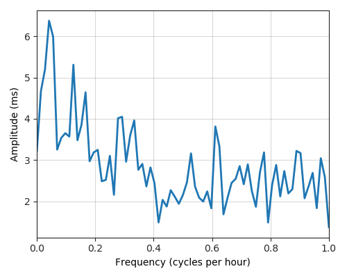

---
layout: default
title: Last-mile delay survey / 2019-09-01 / AS4761
---
AS4761, INDOSAT-INP-AP INDOSAT Internet Network Provider, ID
Summary
- Daily last-mile fluctuations: severe
- Number of probes: 4
- APNIC eyeball rank: 96
- Daily fluctuations: True
- Main frequency: 0.0417
- Average peak-to-peak amplitude: 6.38ms
Aggregated last-mile queuing delay
Periodogram

24H profile
Probes' last-mile RTT